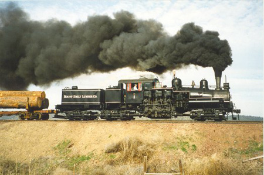

Last updated: 26 June, 2015
| Builder: | Lima |
| Build #: | 3233 |
| Date: | 1923 |
| Engine #: | 1 |
| Railroad: | Mt. Emily Lumber |
| Website: | www.orhf.org, Mount Emily Shay |
| Email: | info@orhf.org |
| Location: | Oregon Rail Heritage Center, 2250 SE Water Ave. Portland, OR 97214 |
| GPS: | 45.505946, -122.660664 Parking under Hwy-99 at end of Grand St. |
| Phone: | 503-233-1156 |
| Status: | Operational |
| Notes: | Thursday - Sunday (as of Sep, 2025) 1:00 - 5:00pm Free Admission, Free Parking |
Three-truck Shay Mt. Emily Lumber Company #1 is presently operated by the City of Prineville Railway. Built in 1923 for the locomotive dealer Hofius Steel & Equipment Co. of Seattle, WA, the locomotive then went to the Independence Logging Company at Independence, WA. Later sold to the Mount Emily Lumber Company of La Grande, OR it was retired in the mid 1950s and donated to the Oregon Museum of Science and Industry in 1957. OMSI then donated the locomotive to the Oregon Historical Society in 1958, who kept it in storage in a railway yard at Portland until 1970 when it was leased to the Cass Scenic Railroad. It was then moved to West Virginia and operated as Cass #3 until the early 1990s when it returned to Oregon.
This Shay geared locomotive was one of 2,768 Locomotives built by the Lima Locomotive Works of Lima Ohio between 1880 and 1945 (only 116 of these engines still exist and only 20-25% of those engines are in operable condition). These locomotives (named after it's inventor Ephraim Shay) were designed to climb steep grades (up to 12%), sharp curves, and were ideal for logging railroads where steep grades and temporary tracks were the rule.
This locomotive was originally built as a "stock" locomotive for Shay dealer Hofius Steel & Equipment Co. of Seattle WA in 1923. Before she was delivered she was sold to the Independence Logging Co. of Aberdeen, WA for $28,070.00. In 1928 she was sold to the Mt. Emily Lumber Co. of La Grande, Oregon. She worked for the next 30 years on Mt. Emily's 40 mile logging railroad which included a 7½ % grade on the mainline.
In 1955 Mount Emily Lumber Co. started hauling all it's logs to the mill by truck and scrapped it's railroad. #1 was donated to the Oregon Museum of Science and Technology.
Unfortunately OMSI did not have a place to display the locomotive. The "lockie" was stored in the Union Pacific round house in La Grande Oregon for several years. After the round house was torn down #1 was towed at 10 miles an hour to Portland, Oregon. In the late 1950's #1 was transferred to the Oregon Historical Society, which still owns the "lockie". The OHS also had no display site for the locomotive. #1 was stored in the rail yards of the Northern Pacific Terminals Co. near Union Depot in Portland until 1970, when leased to the State of West Virginia to operate on their Cass Scenic Railroad which is a tourist operation built on an old logging railroad. The last lease to Cass expired in late 1992.
At that time the Directors of OHS asked Bend Oregon attorney and rail-fan Martin Hansen to find a new home for #1 in the Northwest. A ten year lease with the City of Prineville and the City of Prineville Railway was negotiated and signed.
#1 arrived on two flatcars on May 25, 1994 and was unloaded in 2 days. At that time COPR Engineer Roy Hill and Volunteer Martin Hansen have (with the help of other volunteers) spent hours preparing the locomotive for Operation. Since 1994 the Crooked River Dinner Train has been pulled by #1 for special events and COPR has operated short excursions.
| Class: | 80 ton |
| Gauge: | 4'-8½" |
| F.M.Whyte: | Shay3Tr |
| Drivers: | |
| Gear Ratio: | |
| Tractive Effort: | 35,100 |
| Weight: | 95 tons |
| Weight on Drivers: | |
| Length: | |
| Boiler: | |
| Cylinders: | 13.5x15 |
| Top Speed: | |
| Horsepower: | |
| Fuel: | 1,200 gal |
| Fuel Type: | oil |
| Water: | 4,000 gal |
| Steam psi: | 200 psi |